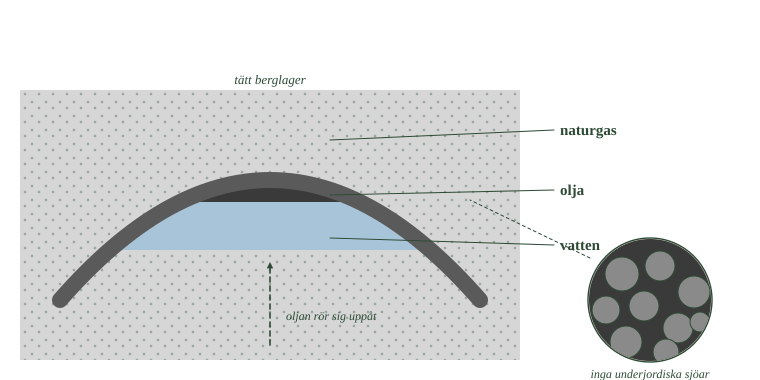
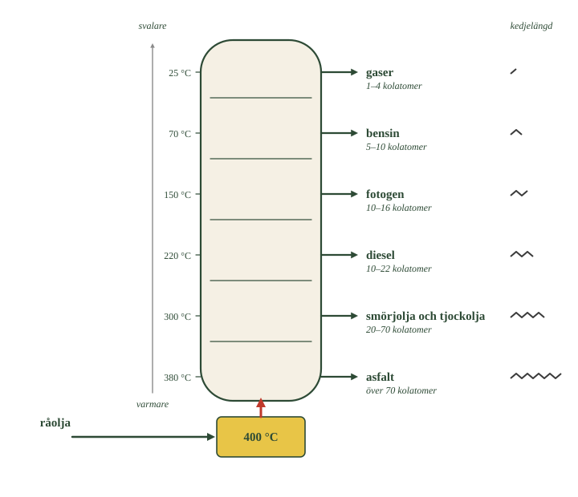
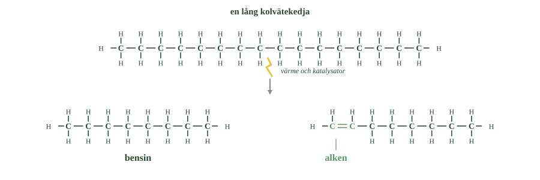

- Vilka organismer bildade oljan?
- Vad var det med bottenmiljön som gjorde att materialet blev kvar?
- Vad avgör om det bildas olja eller naturgas?
- Varför rör sig oljan uppåt genom berggrunden?
- I vilken ordning ligger gas, olja och vatten i en fyndighet?
Plankton på havets botten
Olja bildades av plankton — små växter och djur som levde i havet.
När de dog sjönk de till botten. Där täcktes de av lera. Bottenslammet var syrefattigt, så nedbrytarna kunde inte bryta ner materialet.
En del av kolet blev kvar och begravdes.
Temperaturen avgjorde vad det blev
Ju djupare materialet hamnade, desto varmare blev det.
Mellan ungefär 60 och 120 grader omvandlas materialet långsamt till de kolväten som bildar råolja. Det tar miljontals år.
Men blir det varmare än så händer något annat. Då bildas i stället mer naturgas.
Det är alltså djupet och värmen som avgör vad man hittar. Svalare lager ger olja, varmare ger gas. Därför hittar man ofta båda på samma ställe, fast i olika lager.
Oljan samlas i fällor
Oljan stannar inte där den bildades.
Olja är lättare än vatten och rör sig långsamt uppåt genom sprickor och porer i berget. Den fortsätter så länge berget släpper igenom.
Till slut stöter den på ett lager som är tätt. Där stannar den, och samlas i en oljefälla.
I fällan ordnar sig ämnena efter vikt: gasen överst, oljan i mitten, vattnet underst.
Men det finns ingen underjordisk sjö av olja. Oljan sitter i små hålrum och sprickor i berget, ungefär som vatten inuti en tvättsvamp.
- I vilken ordning ligger gas, olja och vatten? Varför just så?
- Vad är det som hindrar oljan från att fortsätta uppåt?
- Titta på förstoringen. Var finns oljan egentligen?

- Vilka organismer bildade oljan?
- Vad var det med bottenmiljön som gjorde att materialet blev kvar?
- Vad avgör om det bildas olja eller naturgas?
- Varför rör sig oljan uppåt genom berggrunden?
- I vilken ordning ligger gas, olja och vatten i en fyndighet?
Olja är det fossila bränsle vi använder mest. Ungefär 30–35 procent av världens energi kommer från förbränning av olja.
Men råoljan som pumpas upp går inte att använda som den är. Den är en blandning av hundratals olika kolväten, och först när blandningen delas upp blir den användbar — som bensin, diesel, fotogen, asfalt och mycket annat.
I det här avsnittet följer vi oljan från havsbotten till bensinmack.
Plankton sjönk till syrefattiga bottnar
Olja bildades av små växter och djur som levde i havet — framför allt plankton.
När organismerna dog sjönk de till botten. Där täcktes de av lera och andra sediment. I bottenslammet var det syrefattigt, och nedbrytarna kunde inte bryta ner materialet fullständigt. En del av kolet blev därför kvar.
Det är samma sak som hände i kärret, men med en annan följd: här blev materialet begravt i stället för att avgå som gas.
Temperaturen avgjorde vad det blev
Ju djupare materialet begravdes, desto varmare blev det.
Vid temperaturer mellan ungefär 60 och 120 grader omvandlades det organiska materialet långsamt till de kolväten som bildar råolja. Processen tog miljontals år.
Blir det varmare än så bildas i stället mer naturgas. Djupet och temperaturen avgör alltså vilket bränsle som bildas — olja i det svalare intervallet, gas i det varmare.
Det är en förklaring till att olja och naturgas ofta hittas på samma ställen, men i olika lager.
Oljan samlas i fällor
Olja och gas stannar inte där de bildades.
Olja är lättare än vatten och rör sig långsamt uppåt genom porer och sprickor i berggrunden. Så länge berget är poröst fortsätter den, tills den når ett lager som är tätt. Där stannar den och samlas i en oljefälla.
I en sådan fälla ligger gasen överst, oljan i mitten och vattnet underst — de tre ordnar sig efter densitet.
Men det finns inga underjordiska sjöar av olja. Oljan sitter i små hålrum och sprickor i porösa bergarter, ungefär som vatten i en tvättsvamp.
Oljefönstret har både ett golv och ett tak
Standardtexten säger att olja bildas mellan 60 och 120 grader och att det blir mer gas när det är varmare. Det är rätt, och intervallet har ett namn: oljefönstret.
Men fönstret har två kanter, och båda beror på samma sak.
Under ungefär 60 grader är det för kallt. Kerogenet ligger stilla och bryts inte ner till mindre molekyler. Materialet blir kvar som kerogen — det är vad oljeskiffer är.
Över ungefär 150 grader är det för varmt. Nu bryts inte bara kerogenet ner, utan även oljemolekylerna som redan bildats. Långa kedjor slås sönder till allt kortare, och till slut återstår mest metan.
Det är alltså samma process som i ett raffinaderi. Krackningen som beskrivs i 2.3 är exakt vad naturen gör med olja som hamnar för djupt — fast långsammare och utan katalysator.
Djupet avgör därför vad man hittar. Ungefär två till fyra kilometers djup ger olja. Djupare än så ger gas. Grundare ger kerogen som aldrig mognat.
Om modellen. Standardnivån säger att varmare ger mer gas, vilket kan låta som att gasen bildas i stället för oljan. Den bildas ofta av oljan. Naturgas på stort djup är inte ett annat spår — det är olja som gått för långt.
- Varför går det inte att använda råolja som den är?
- Vilken egenskap hos kolvätena gör uppdelningen möjlig?
- Vad händer med råoljan längst ner i tornet?
- Varför hamnar olika ämnen på olika nivåer?
- Vilken fraktion tas ut högst upp, och vilken i botten?
Råolja går inte att använda
Oljan som pumpas upp kallas råolja eller petroleum. Ungefär 80 procent av dess vikt är kol.
Råolja är ingen enhetlig vätska. Den är en blandning av hundratals olika kolväten — korta kedjor som är gaser, medellånga som är vätskor, och långa som nästan är fasta.
Ingen bil går på råolja. För att blandningen ska bli användbar måste den delas upp. Det kallas att oljan raffineras.
Kokpunkterna gör uppdelningen möjlig
Uppdelningen bygger på något vi redan kan: kolväten med olika långa kedjor kokar vid olika temperatur.
Metoden kallas fraktionerad destillation och sker i ett fraktioneringstorn.
Råoljan hettas upp till ungefär 400 grader och leds in längst ner i tornet. Det mesta förångas och stiger uppåt.
Tornet är kallast högst upp. När en gas kommer till en nivå där det är kallare än dess kokpunkt blir den vätska igen och samlas upp.
De kortaste kolvätena har lägst kokpunkt och hinner därför högst upp. De längsta blir vätska nästan direkt.
Varje sådan del kallas en fraktion.
- Var i tornet är det varmast, och var är det kallast?
- Jämför kedjelängderna vid uttagen. Hur ändras de nedåt?
- Varför hamnar asfalten i botten och inte högst upp?

Varje fraktion har sin användning
Högst upp: gaser. Metan blir naturgas, etan blir råvara till plast, propan och butan blir gasol.
Sedan: bensin, med fem till tio kolatomer.
Därefter: fotogen, som används som flygbränsle.
Längre ner: dieselolja med tio till tjugotvå kolatomer, och sedan tjockolja och smörjmedel.
I botten: det som aldrig förångades. Det blir asfalt till vägar och takpapp.
Lägg märke till ordningen. Den följer exakt kedjelängden — precis som kokpunktskurvan i förra delkapitlet.
- Varför går det inte att använda råolja som den är?
- Vilken egenskap hos kolvätena gör uppdelningen möjlig?
- Vad händer med råoljan längst ner i tornet?
- Varför hamnar olika ämnen på olika nivåer?
- Vilken fraktion tas ut högst upp, och vilken i botten?
Råolja går inte att använda som den är
Den olja som pumpas upp kallas råolja eller petroleum. Ungefär 80 procent av dess vikt är kol.
Råolja är ingen enhetlig vätska utan en blandning av mycket olika kolväten — från de allra kortaste, som är gaser, till mycket långa kedjor som är nästan fasta.
För att blandningen ska bli användbar måste den delas upp i sina beståndsdelar. Det kallas att oljan raffineras.
Kolvätenas olika kokpunkter gör uppdelningen möjlig
Uppdelningen bygger på något vi redan känner till: kolväten med olika långa kedjor har olika kokpunkt.
Metoden kallas fraktionerad destillation och sker i ett fraktioneringstorn.
Råoljan hettas upp till ungefär 400 grader och leds in nedtill i tornet. De flesta kolvätena förångas. Gasen stiger uppåt, och tornet blir svalare ju högre upp man kommer.
När en gas når en nivå där temperaturen ligger under dess kokpunkt kondenserar den och samlas upp. De kortaste kolvätena har lägst kokpunkt och stiger därför högst innan de blir vätska. De längsta kondenserar nästan direkt.
Varje sådan uppsamlad del kallas en fraktion.
Varje fraktion har sin användning
Högst upp samlas gaserna. Metan används som naturgas, etan blir råvara för plast, och propan och butan blir gasol till tändare och campingkök.
Därunder kommer bensin, med fem till tio kolatomer, och sedan fotogen, som bland annat används som flygbränsle.
Längre ner samlas dieselolja med tio till tjugotvå kolatomer, och därefter tjockolja och smörjmedel.
Det som inte förångas alls blir kvar i botten. Det används till asfalt på vägar och till takpapp.
Fraktionerna är fortfarande blandningar
Standardtexten beskriver hur destillationen delar upp råoljan i fraktioner. Det kan låta som att man till slut får rena ämnen ut ur tornet. Det gör man inte.
En fraktion är inte ett ämne utan en grupp ämnen med ungefär samma kokpunkt. Bensin är inte en molekyl; det är allt som kokar mellan ungefär 40 och 200 grader — hundratals olika kolväten med fem till tio kolatomer, raka, grenade och ringformade.
Det gör "bensin" till något annat än ett kemiskt namn. Det är en specifikation: en beskrivning av vad en blandning ska klara, inte av vad den innehåller.
Den viktigaste egenskapen kallas oktantal. Det mäter hur väl bränslet motstår att självantända under tryck i motorn. Grenade kolväten klarar det bättre än raka, och därför blandar raffinaderiet medvetet in dem.
Två tankar bensin från olika länder kan alltså ha helt olika kemisk sammansättning och ändå vara samma vara.
Om modellen. Destillationen sorterar efter en enda egenskap: kokpunkten. Allt som råkar koka vid samma temperatur hamnar tillsammans, oavsett hur molekylerna ser ut. Det är därför metoden är så användbar — och därför resultatet aldrig blir rent.
- Varför räcker inte den bensin som fraktioneringen ger?
- Vad händer med kolvätekedjorna vid krackning?
- Vilka egenskaper gör olja till ett bra bränsle?
- Vad används olja till förutom som bränsle?
- Varifrån kom etenen som blev polyeten?
Bensinen räcker inte
Fraktioneringen ger en viss mängd av varje fraktion. Hur mycket beror på vad just den råoljan innehåller.
Problemet är att vi inte vill ha det i den fördelningen. Vi vill ha mycket mer bensin än vad oljan ger, och mindre av de tyngsta fraktionerna.
Krackning slår sönder kedjorna
Lösningen kallas krackning.
Långa kolvätekedjor värms upp kraftigt, oftast med hjälp av en katalysator. Värmen gör att kedjorna slås sönder på mitten.
Ur en lång molekyl blir det två kortare. Fortsätter man får man kedjor med fem till tio kolatomer — alltså bensin.
Krackning gör det möjligt att bestämma vad raffinaderiet ska producera, i stället för att låta råoljan bestämma.
- Räkna kolatomerna i den övre raden och i de två nedre. Stämmer det?
- Vad har hänt vid den gröna markeringen?
- Vilken av de två nya molekylerna skulle kunna bli plast?

Olja är ett bra bränsle
Olja är svår att ersätta som bränsle, och det finns skäl till det.
Den innehåller mycket energi per kilo. Den är vätska, vilket gör den lätt att pumpa, lagra och frakta. Och den går att dela upp i fraktioner som passar olika saker.
Olja används därför till el, uppvärmning och framför allt som motorbränsle. I fordon renas avgaserna av en katalysator, som vi kommer till i nästa avsnitt.
Men det mesta av nyttan syns inte
Nästan all olja förbränns. Men en liten del används till något helt annat.
Olja är råvara för plaster, färger, lösningsmedel och läkemedel.
Kommer du ihåg etenen som blev polyeten i förra delkapitlet? Den kom härifrån. Etenen framställs ur etan, och etanen kom ur råoljan.
En plastpåse och en tank bensin har alltså samma ursprung. Skillnaden är bara vad man valde att göra med kolvätena.
- Varför räcker inte den bensin som fraktioneringen ger?
- Vad händer med kolvätekedjorna vid krackning?
- Vilka egenskaper gör olja till ett bra bränsle?
- Vad används olja till förutom som bränsle?
- Varifrån kom etenen som blev polyeten?
Krackning gör bensin av längre kedjor
Fraktioneringen ger en viss mängd av varje fraktion, bestämd av vad råoljan råkar innehålla.
Problemet är att efterfrågan inte ser likadan ut. Vi vill ha mycket mer bensin än vad råoljan naturligt ger, och mindre av de tyngsta fraktionerna.
Lösningen kallas krackning. Längre kolvätekedjor värms upp, ofta med hjälp av en katalysator, så att de slås sönder till kortare kedjor.
Ur långa molekyler får man på så sätt kedjor med fem till tio kolatomer — alltså bensin.
Krackning gör det möjligt att anpassa raffinaderiets produktion efter vad som behövs, i stället för efter vad råoljan råkar innehålla.
Olja är ett bra bränsle
Olja har egenskaper som gör den svår att ersätta som bränsle.
Den innehåller mycket energi per kilo. Den är vätska, vilket gör den lätt att pumpa, lagra och transportera med tankbil, tåg eller fartyg. Och den går att dela upp i fraktioner som passar olika ändamål.
Olja används därför till elproduktion, uppvärmning och framför allt som motorbränsle.
I fordon renas avgaserna med en katalysator, som vi återkommer till i nästa avsnitt.
Men den största nyttan är kanske inte bränslet
Ungefär nittio procent av all olja förbränns. Den sista tiondelen används till något annat — och det är den delen som är svårast att ersätta.
Olja är nämligen råvara för plaster, färger, lösningsmedel och läkemedel.
Etenen som blev polyeten i förra delkapitlet kom härifrån. Den framställdes ur etan, som i sin tur kom ur råoljan.
Det betyder att en plastpåse och en tank bensin har samma ursprung. Skillnaden är bara vad man valde att göra med kolvätena.
Krackning ger inte bara bensin
Standardtexten beskriver krackning som ett sätt att göra bensin av längre kedjor. Det är den viktigaste användningen, men det är inte allt som händer.
När en lång kedja slås sönder finns det inte alltid tillräckligt med väte för att båda bitarna ska bli mättade alkaner. Resultatet blir att en av bitarna får en dubbelbindning — alltså en alken.
Krackning producerar därför stora mängder eten och propen som biprodukter.
Och de biprodukterna är råvaran till plastindustrin. Etenen som blir polyeten kommer nästan alltid från krackning.
Det finns en variant av processen som utnyttjar detta med avsikt. I ångkrackning hettas kolväten upp med vattenånga till över 800 grader, just för att få ut så mycket alkener som möjligt. Den processen är i dag världens största enskilda källa till eten.
Här sluts alltså en cirkel från förra delkapitlet. Polymererna byggdes av omättade molekyler, eftersom bara de kan öppna sin dubbelbindning. Och de omättade molekylerna finns i stor skala just för att vi krackar olja.
Om modellen. Standardnivån behandlar krackning som en metod för att få mer bensin. Det är rätt i volym räknat. Men samma process är också förutsättningen för nästan all plast — och det är inte en bieffekt någon råkade upptäcka, utan något industrin i dag gör med avsikt.
Laddar övningskort…
Laddar frågor ...